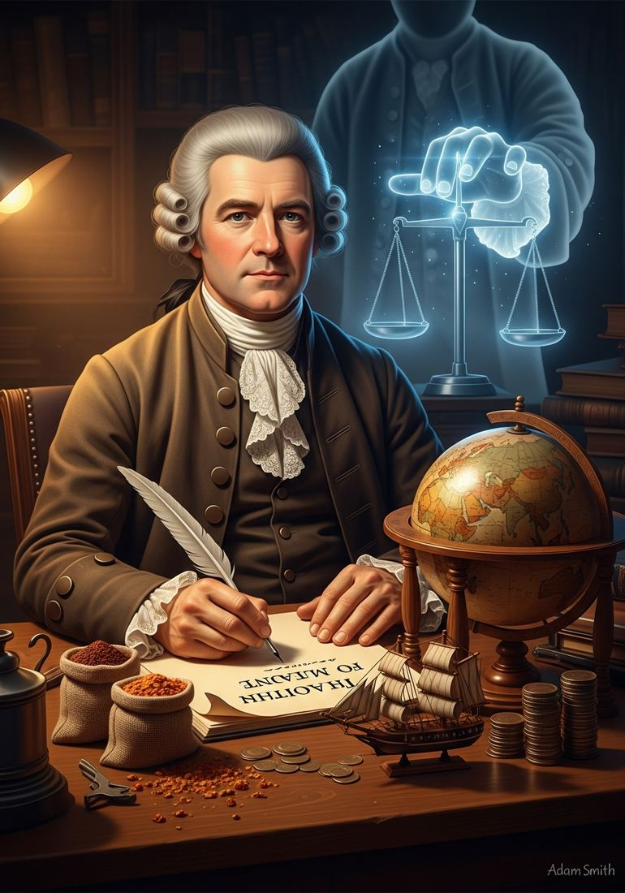
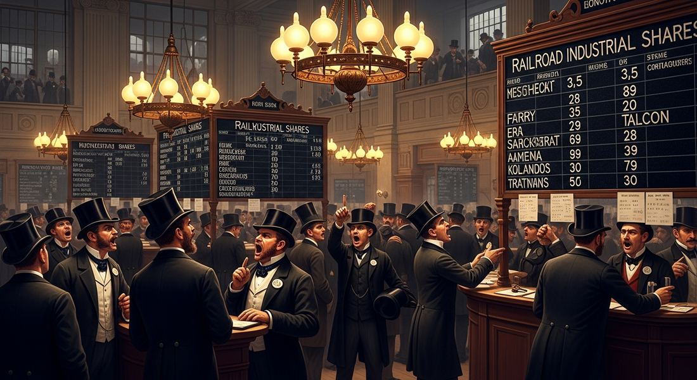

5.7 Economic Developments and Innovations in the Industrial Age
- LO-A: Industrial capitalism and new financial institutions: Industrial capitalism required moving large amounts of money efficiently across borders and between investors. Two innovations made this possible: (1) stock markets, allowed many investors to pool capital in a company, sharing risk and return; (2) limited-liability corporations, investors could lose no more than their investment, even if the company failed, which encouraged investment in risky ventures. HSBC (Hong Kong and Shanghai Banking Corporation) and Unilever are the CED's required examples of transnational businesses that operated across multiple countries using these new financial structures. Before industrialization, Western European governments followed mercantilism: the belief that national wealth depended on accumulating gold and silver through a controlled, favorable trade balance. Colonies existed to supply raw materials cheaply and buy finished goods expensively. Adam Smith's Wealth of Nations (1776) argued that this was wrong, free markets, specialization, and competition produced more wealth for everyone than government control. Britain adopted free trade policies in the 1840s (Corn Laws repealed 1846), betting that its industrial efficiency would win in open markets. It did. Consumer goods and rising (uneven) living standards: Industrial capitalism increased the availability and variety of goods and reduced their cost. A working-class family in 1900 could afford cotton clothing, canned food, cheap dishes, and other manufactured goods that their grandparents could not have bought. This was real improvement. But the distribution of industrial wealth was very uneven, factory owners and investors benefited far more than workers, at least in the early decades. The question of who benefited and who was left behind is the subject of Topic 5.8.
Try each question before revealing the answer.
1. Mercantilism held that nations competed for a fixed amount of global wealth. Adam Smith argued this was wrong. What did Smith say instead, and why did it matter for trade policy?
2. A stock market allows many investors to each buy a small share of a company. How does this financial innovation solve the problem of funding large industrial enterprises?
3. What does "limited liability" mean, and why would it encourage more people to invest in industrial companies?
4. The Hong Kong and Shanghai Banking Corporation (HSBC) was founded in 1865 to finance trade between Europe and Asia. Why would a bank that operated across multiple countries be necessary for global industrial trade?
5. Industrial capitalism increased the availability of consumer goods. Why might this benefit not be equally distributed across all parts of society?
- Explain the development of economic systems, ideologies, and institutions and how they contributed to change in the period from 1750 to 1900.
Tap a term for its definition.
-
Definition: An economic system in which governments controlled trade to accumulate gold and silver, using colonies as sources of raw materials and markets for finished goods. Significance: The dominant economic theory before industrialization; gradually replaced by free-trade capitalism in the 19th century.
-
Definition: From French meaning "let it be", the economic theory that markets work best when governments do not interfere. Associated with Adam Smith's Wealth of Nations (1776). Significance: The ideological basis for British free-trade policy in the 19th century; argued that government control of markets reduces overall wealth.
-
Definition: An economic policy removing tariffs, quotas, and other restrictions on imports and exports, allowing goods to flow freely between countries based on price competition. Significance: Britain adopted free trade in the 1840s; as the world's most efficient industrial producer, Britain benefited enormously from open markets.
-
Definition: An economic system in which private investors own factories and industrial enterprises, employ wage workers, and reinvest profits to expand production. Significance: The economic system of the Industrial Revolution; transformed the relationship between producers and workers, and created the class structures of modern industrial society.
-
Definition: A marketplace where shares of corporations are bought and sold, allowing many investors to pool capital in companies. Significance: CED illustrative example; made it possible to raise large amounts of capital for industrial enterprises by spreading investment and risk across many shareholders.
-
Definition: A legal business structure in which investors cannot lose more than their invested amount, even if the company fails and owes debts. Significance: CED illustrative example; dramatically expanded investment by protecting investors from unlimited personal financial exposure, making industrial investment accessible to middle-class savers.
-
Definition: A British bank founded in 1865 to facilitate trade between Europe and Asia, operating across multiple countries and currencies. Significance: CED required example of a transnational business that relied on new banking and finance practices to operate across the global industrial trade network.
-
Definition: An economic and cultural system in which the purchase of goods becomes a central activity of ordinary life, enabled by mass production making goods affordable to working and middle classes. Significance: Industrial capitalism increased the variety and affordability of consumer goods; the emergence of consumer culture was a major social change of the late 19th century.
📖 From Mercantilism to Free Trade: A Revolution in Economic Ideas
Before the 19th century, most European governments operated on mercantilist principles: the goal of economic policy was to accumulate gold and silver (the basis of national power) by exporting more than you imported. Colonies existed specifically to serve the mother country, supplying raw materials cheaply and buying finished goods without competition. Trade was tightly controlled. Tariffs, monopolies, and colonial restrictions were normal.
In 1776, the same year as the American Declaration of Independence, a Scottish economist named Adam Smith published The Wealth of Nations, one of the most influential books in the history of economics. Smith attacked mercantilism at its foundations:
- Nations don't compete for a fixed amount of wealth, trade creates new wealth through specialization and exchange
- Markets, when left to operate freely, naturally direct resources to their most productive uses through price signals, what Smith called the "invisible hand"
- Government interference (tariffs, monopolies, colonial restrictions) reduces efficiency and makes everyone poorer
- The division of labor, workers specializing in specific tasks, vastly increases productivity
These ideas took time to become policy. Britain's Corn Laws (tariffs protecting domestic grain producers) were not repealed until 1846. But when they were, Britain fully committed to free trade, and its dominant industrial position meant it benefited enormously. The world's most efficient manufacturer in an open-market system sells everywhere; its competitors struggle to survive.

Adam Smith's Wealth of Nations (1776) argued that free markets, not government control, produced the most wealth. His ideas became the intellectual foundation for 19th-century British trade policy (Google Gemini, 2025), commercially licensed.
🏦 New Financial Institutions: Making Industrial Capital Work
Industrial capitalism required large amounts of capital, money to build factories, buy machinery, and pay workers before goods were sold. Traditional banking (lending to merchants and landowners) was not designed for this scale of investment. New financial institutions evolved to meet the need.
Stock markets allowed companies to divide ownership into many small shares and sell them to the public. A person with a modest amount of savings could buy a few shares of a railroad or manufacturing company, becoming a part-owner and sharing in its profits. Thousands of small investors pooling resources could collectively finance enterprises far too large for any single investor to fund. London's Stock Exchange, formalized in 1801, became the center of global industrial investment.
Limited-liability corporations were the legal structure that made stock ownership practical. Before limited liability, investing in a business meant being personally responsible for all its debts, if the business failed, creditors could seize your house, your savings, and everything you owned. This kept most middle-class savers from investing in risky industrial ventures. Limited liability (established in Britain by the Companies Act of 1856) changed this: an investor in a limited-liability company could lose their investment, but nothing more. Their house was safe. This dramatically expanded the pool of investors willing to fund industrial enterprises.
🌐 Transnational Businesses: HSBC and Unilever
Industrial capitalism was not just a national phenomenon. It was inherently global. Raw materials came from colonies; finished goods went to global markets; capital flowed across borders. Managing this required businesses that operated in multiple countries simultaneously, transnational businesses that the CED specifically names as examples.
HSBC (Hong Kong and Shanghai Banking Corporation). Founded in 1865 by a Scotsman in Hong Kong, HSBC was explicitly designed to finance trade between Europe and Asia. It operated in Hong Kong, Shanghai, Bombay, Calcutta, Singapore, and London simultaneously, handling the complex multi-currency, multi-legal-system financial transactions that global trade required. A British textile firm selling cloth in China needed a bank that could accept payment in Chinese currency, convert it, and transfer it to Britain. HSBC did this. It became one of the world's largest banks and still exists today.
Unilever, A consumer goods company formed by the merger of a British soap manufacturer and a Dutch margarine producer, Unilever operated across Europe and in colonial territories including British West Africa and the Belgian Congo. It sourced raw materials (palm oil from West Africa, coconut oil from Asia) and sold finished consumer products (soap, cooking fats, later food and personal care products) globally. It represented the full chain of industrial capitalism: raw materials from colonies, processing in industrial centers, consumer goods sold globally.

The London Stock Exchange became the world's center of industrial investment, where capital flowed from thousands of investors into railroads, factories, mines, and transnational businesses operating across multiple continents (Google Gemini, 2025), commercially licensed. The London Stock Exchange became the world's center of industrial investment, where capital flowed from thousands of investors into railroads, factories, mines, and transnational businesses operating across multiple continents (Google Gemini, 2025), commercially licensed.
🛒 Industrial Capitalism and Consumer Goods
One of industrial capitalism's most visible effects was the transformation of consumer life. Before industrialization, most goods were expensive because they were made by hand. A cotton shirt required many hours of skilled labor and cost more than a day's wages for a typical worker. By 1900, machine-made cotton clothing was affordable on a working-class budget.
Industrial capitalism drove down the cost of manufactured goods in several ways:
- Machines worked faster than human hands, producing more goods per hour
- Division of labor made production more efficient
- Scale economies, the larger the production run, the lower the cost per unit
- Improved transportation (railroads, steamships) reduced the cost of moving raw materials and finished goods
The result was what historians call a "consumer revolution", for the first time, ordinary working people could afford a modest range of manufactured goods: cotton clothing, iron cookware, mass-produced pottery, and eventually bicycles, sewing machines, and other complex goods. Department stores appeared in major cities, selling a wide variety of goods to middle-class shoppers.
But the benefits were distributed very unevenly. Factory owners, investors, and the new industrial middle class accumulated enormous wealth. Industrial workers earned modest wages that improved slowly. And in the non-industrialized world, local manufacturers were often undercut by cheap industrial goods while seeing little of the prosperity that industrial capitalism created for Western workers. The tensions this created are the subject of Topic 5.8.
These videos will help you review Economic Developments and Innovations in the Industrial Age and solidify key concepts before your exam.
- A) The practice of guilds restricting craftspeople to making complete products by hand
- B) The practice of paying skilled workers more than unskilled workers
- C) The tendency of governments to invest in infrastructure to support commerce
- D) The mercantilist policy of using colonial restrictions and tariffs to control trade
- A) transferred the financial risk of industrial investment from investors to the government
- B) allowed corporations to avoid paying their debts by limiting what creditors could claim
- C) encouraged broader participation in industrial investment by protecting investors from losing more than their invested amount
- D) were primarily designed to benefit wealthy factory owners rather than small investors
- A) The British government's policy of subsidizing banks that operated in colonial territories
- B) The development of transnational financial institutions to support the complex global trade networks of industrial capitalism
- C) The replacement of Asian banking systems by British financial institutions in colonial territories
- D) The practice of using banking institutions to enforce political control over colonial populations
- A) Industrial capitalism improved material living standards for workers while distributing its economic gains very unevenly
- B) Industrial capitalism produced broadly equal benefits for workers and investors
- C) The primary beneficiaries of industrial capitalism were workers rather than investors
- D) Industrial capitalism reduced the cost of consumer goods but at the expense of declining wages for workers
- A) The decline of Britain's agricultural sector as a political force compared to industrial manufacturing interests
- B) The government's response to working-class demands for lower food prices through political reform
- C) Britain's shift from mercantilist trade controls toward free-trade policies based on laissez-faire economic principles
- D) The adoption of Adam Smith's principle that agricultural specialization produced more wealth than manufacturing
Answer all three parts (A, B, C).
Part A
Identify ONE key argument Adam Smith made in The Wealth of Nations that challenged mercantilist economic practices.
Part B
Explain ONE way new financial institutions or practices supported the growth of industrial capitalism in the period 1750–1900.
Part C
Explain ONE way industrial capitalism contributed to both improved living standards and increased economic inequality in the period 1750–1900.
Write a thesis before revealing. A strong thesis restates the verb phrase, adds a quantifier, and ends with because [A] and [B].